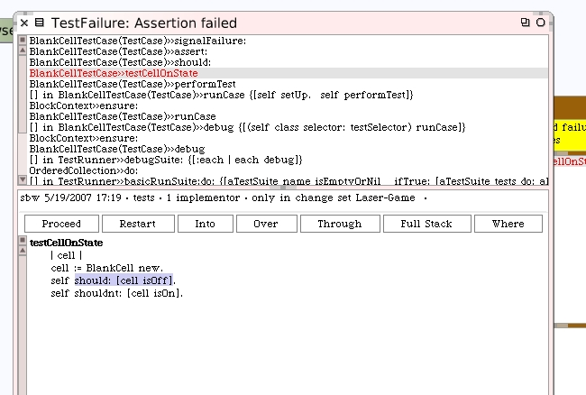
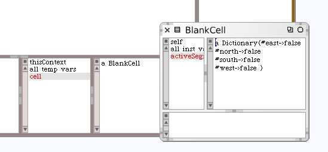

Click the debug button and select the instance method name from the call-stack in the debugger to see where it actually failed.
That's not surprising. However, we can use the debugger and inspect our new model instance just to see if it's what we expected. We're not too concerned about specifics here since we'll write more tests for those but we just want to take a quick look.
That looks great. Okay. Let's go back and make our model pass the tests. Close the debugger and inspector we opened. You can leave the test runner open for later. Go back to the class browser.